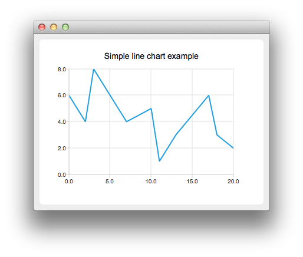
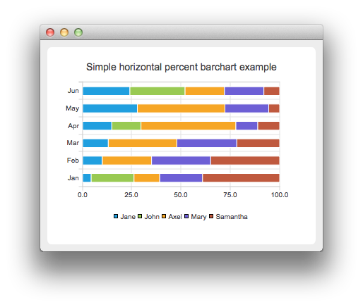
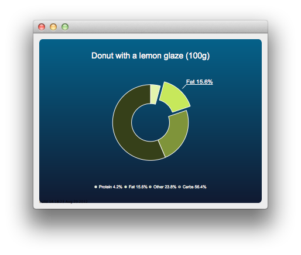
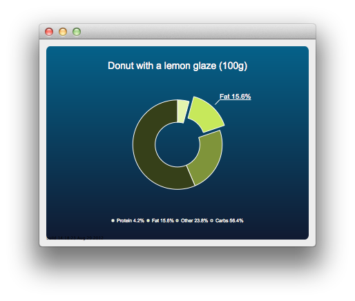
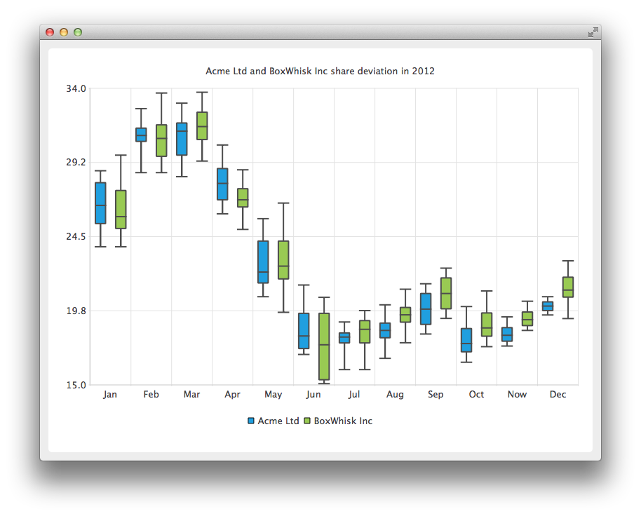
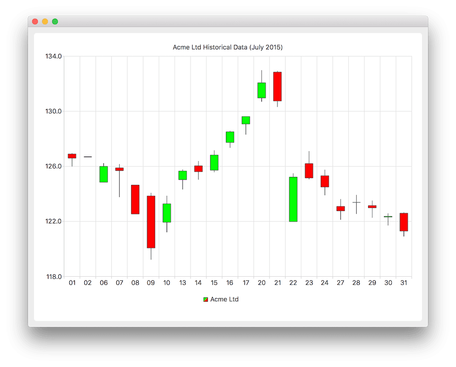
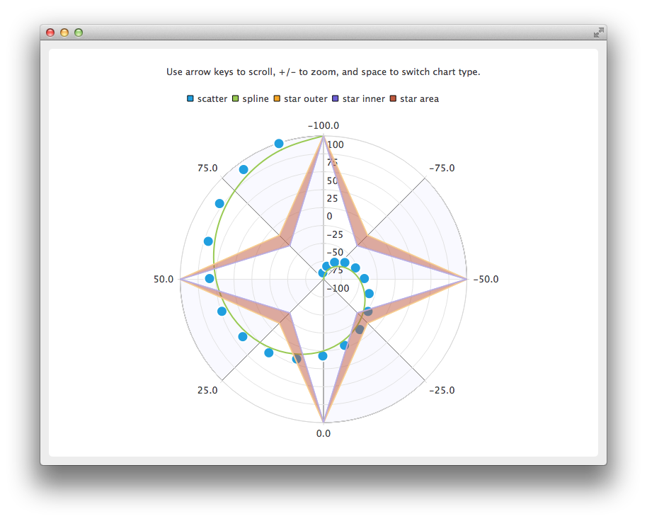

Qt Charts Overview
Qt Charts enables creating stylish, interactive, data centric user interfaces. Qt Charts uses the Graphics View Framework for ease of integration. The chart components can be used as QWidget or QGraphicsWidget objects or QML types.

The QChart class manages the graphical representation of different types of series and other chart related objects, such as legend and axes. QChart is a QGraphicsWidget that can be shown in a QGraphicsScene. A simpler solution is to display a chart in a layout by using the convenience class QChartView instead of QChart. In QML, charts are displayed using the ChartView type.
Some chart components can also be presented as polar charts by using the the QPolarChart class that is a specialization of the QChart class or the PolarChartView QML type that is a specialization of the ChartView type.
The look and feel of charts can be customized by using themes, modifying colors and properties, hiding chart components, or animating charts.
Model mappers enable using a data model derived from the QAbstractItemModel class as a data source for a chart. Model mappers can be either horizontal or vertical.
Chart Types
The Qt Charts module provides the following chart types:
- Line and spline charts
- Area and scatter charts
- Bar charts
- Pie charts
- Box-and-whiskers charts
- Candlestick charts
- Polar charts
Each chart type is represented by an QAbstractSeries derived class or AbstractSeries derived type in QML. Charts are created by using an instance of a series class and adding it to a QChart or ChartView instance.
For example:
QLineSeries* series = new QLineSeries(); series->add(0, 6); series->add(2, 4); ... chartView->chart()->addSeries(series); chartView->chart()->createDefaultAxes();
Or, in QML:
ChartView { id: chart title: "Top-5 car brand shares in Finland" anchors.fill: parent legend.alignment: Qt.AlignBottom antialiasing: true property variant othersSlice: 0 PieSeries { id: pieSeries PieSlice { label: "Volkswagen"; value: 13.5 } PieSlice { label: "Toyota"; value: 10.9 } PieSlice { label: "Ford"; value: 8.6 } PieSlice { label: "Skoda"; value: 8.2 } PieSlice { label: "Volvo"; value: 6.8 } } Component.onCompleted: { // You can also manipulate slices dynamically, like append a slice or set a slice exploded othersSlice = pieSeries.append("Others", 52.0); pieSeries.find("Volkswagen").exploded = true; } } import QtQuick
You can combine different types of series in one chart.
Line and Spline Charts
Line and spline charts present data as a series of data points connected by lines. In a line chart, the data points are connected by straight lines, whereas in a spline chart they are connected by a spline. The spline is drawn by using QPainterPath.
 
A line chart is implemented by using the QLineSeries class or the LineSeries QML type.
A spline chart is implemented by using the QSplineSeries class that inherits QLineSeries or the SplineSeries type that inherits LineSeries.
For more information, see Creating Line Charts and Creating Spline Charts. For an example of combining a line chart with a bar chart and using a common axis for both, see Combining Line and BarChart.
Area and Scatter Charts
Area charts present data as an area bound by two lines, whereas scatter charts present data as a collection of points.


An area chart is implemented by using the QAreaSeries class or the AreaSeries QML type. By default, the x-axis is used as one boundary and QLineSeries or LineSeries as the other. However, you can use QLineSeries or LineSeries as both boundaries.
A scatter chart is implemented by using the QScatterSeries class or the ScatterSeries QML type.
For more information, see Creating Area Charts and Creating Scatter Charts.
Bar Charts
A bar chart presents data as horizontal or vertical bars that are grouped by category. The QBarSet class and the BarSet QML type represent one set of bars in a bar chart. The QAbstractBarSeries class is an abstract parent class for all bar series classes, and the AbstractBarSeries type is the parent type of bar series types. The series type determines how the data is presented.
The QBarSeries class and the BarSeries QML type present data as vertical bars grouped by category. Similarly, the QHorizontalBarSeries class and the HorizontalBarSeries QML type present data as horizontal bars.


The QStackedBarSeries class and the StackedBarSeries type present a series of data as vertically stacked bars, with one bar per category. The corresponding horizontal class and type are QHorizontalStackedBarSeries and HorizontalStackedBarSeries, respectively.
The QPercentBarSeries class and PercentBarSeries QML type present a series of categorized data as a percentage of each category. The corresponding horizontal class and type are QHorizontalPercentBarSeries and HorizontalPercentBarSeries, respectively.

For more information, see Creating Bar Charts, Creating Horizontal Stacked Bar Charts, Creating Horizontal Bar Charts, and Creating Horizontal Percent Bar Charts.
Pie Charts
Pie charts present data as a pie that consists of pie slices. The pie is implemented using the QPieSeries class or the PieSeries QML type and the pie slices are added using the QPieSlice class or the PieSlice QML type.
The pie can be turned into a donut by specifying a hole size between 0.0 and 1.0.
 

For more information, see Charts with Widgets Gallery, Creating a Donut Breakdown Chart, and Creating Nested Donut Charts.
Box-and-Whiskers Charts
The box-and-whiskers charts present data as quartiles extended with whiskers that show the variability of the values. The items in box plot series are grouped by category, similarly to bar sets in bar series. For each box-and-whiskers item, the lower extreme, lower quartile, median, upper quartile, and upper extreme value are specified.
A box-and-whiskers chart is implemented by using the QBoxPlotSeries and QBoxSet classes or the BoxPlotSeries and BoxSet QML types.

For more information, see Creating Box-and-Whiskers Charts.
Candlestick Charts
Candlestick charts presents a series of data shown as candlesticks.

A candlestick chart is implemented by using the QCandlestickSeries and QCandlestickSet classes or the CandlestickSeries and CandlestickSet QML types.
Polar Charts
Polar charts present data in a circular graph, where the placement of data is based on the angle and distance from the center of the graph, the pole.

The QPolarChart class is a specialization of the QChart class. It supports line, spline, area, and scatter series, as well as all the axis types supported by them. The axis can be used either as a radial or an angular axis. In QML, the corresponding type is PolarChartView.
For more information, see Creating Polar Charts and Using Polar Charts with QML.
Axes
Qt Charts supports the following axis types:
- Value axis
- Category axis
- Bar category axis
- Date-time axis
- Logarithmic value axis
An axis can be set up to show a line with tick marks, grid lines, and shades. The values on the axis are drawn at the positions of tick marks. All axis types are specializations of the QAbstractAxis class or the AbstractAxis QML type.
A value axis adds real values to a chart's axis. It is implemented using the QValueAxis class or the ValueAxis QML type.
A category axis is implemented using the QCategoryAxis class or the CategoryAxis QML type. It has named ranges and adjustable range widths.
The bar category axis is similar to a category axis, but the range width is the same for all ranges. A bar category axis is implemented using the QBarCategoryAxis class or the BarCategoryAxis QML type.
A date-time axis adds dates and times to a chart's axis. It is implemented using the QDateTimeAxis class or the DateTimeAxis QML type.
A logarithmic axis adds a logarithmic scale to a chart's axis. A logarithmic scale is a nonlinear scale that is based on orders of magnitude, so that each tick mark on the axis is the previous tick mark multiplied by a value. A logarithmic axis is implemented using the QLogValueAxis class or the LogValueAxis QML type.
Multiple axes can be defined for one chart. The axes can be placed down, up, left, or right of the chart. Further, the axes can be of different types. However, mixing axis types that would result in different domains is not supported, such as specifying QValueAxis and QLogValueAxis on the same orientation.
For more information, see Line Charts with Date and Time Axes, Using Logarithmic Value Axes, Using Multiple Axes, and Using Axes with QML.
Legend
A legend is a graphical object that displays the legend of a chart. Legend objects cannot be created or deleted, but they can be referenced via the QChart class or the ChartView QML type. The legend state is updated by QChart or ChartView when series change.
A legend can be positioned below or above the chart, as well as to the left or right of it. By default, the legend is attached to the chart view, but it can be detached to a separate graphics item that can be moved around freely.
It is possible to hide either individual markers from the legend or the whole legend.
Legend markers can be modified by using the QLegendMarker base class and the subclasses for each series type: QAreaLegendMarker, QBarLegendMarker, QBoxPlotLegendMarker, QCandlestickLegendMarker, and QXYLegendMarker.
In QML, legend markers can be modified by creating custom legends, as illustrated by the Customizing Legends example.
Interacting with Charts
End users can interact with charts by dynamically adding values to them, drilling down into data, zooming into and out of charts, scrolling charts, and clicking items in charts or hovering the mouse over them.
Drawing Data Dynamically
It is possible to add data to charts dynamically and to make the chart view scroll automatically to display the new data.
For more information, see Creating Spline Charts.
Drilling Down into Data
Drilldown effects can be implemented to bar or pie charts, for example. When users select an item in the chart, a more detailed view of the item is displayed. This is implemented by deleting the first series and adding another one.
For more information, see Implementing Drilldown.
Zooming and Scrolling
Users can use the keyboard for zooming and scrolling. They can scroll charts by using the arrow keys and zoom into or out of charts by using the plus and minus keys. In addition, QRubberBand can be used for selecting the area to zoom into.
On touch devices, gestures can be used for panning and zooming.
For more information, see Zoom Line Example.
Clicking and Hovering
You can connect slots to signals emitted when end users click items in charts or hover the mouse over them. This enables you to add elements, such as callouts, to the charts.
For more information, see Drawing a Callout on Top of a Chart.
Themes
A theme is a built-in collection of UI style related settings applied to all the visual elements of a chart, such as colors, pens, brushes, and fonts of series, as well as axes, title, and legend.

Qt Charts comes with the following predefined themes:
- Light theme, which is the default theme
- Cerulean blue theme
- Dark theme
- Sand brown theme
- Natural color system (NCS) blue theme
- High contrast theme
- Icy blue theme
- Qt theme
The themes can be customized by changing the colors, pens, brushes, and fonts. New themes can be added by modifying the Qt Charts source code.
Note: Changing the theme will overwrite all customization previously applied to the series.
For more information, see the Creating Charts With Themes.